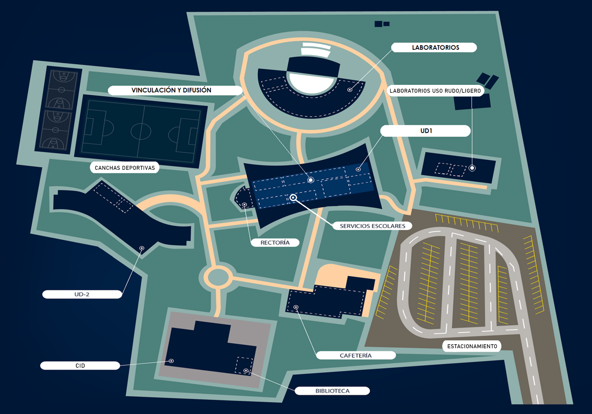
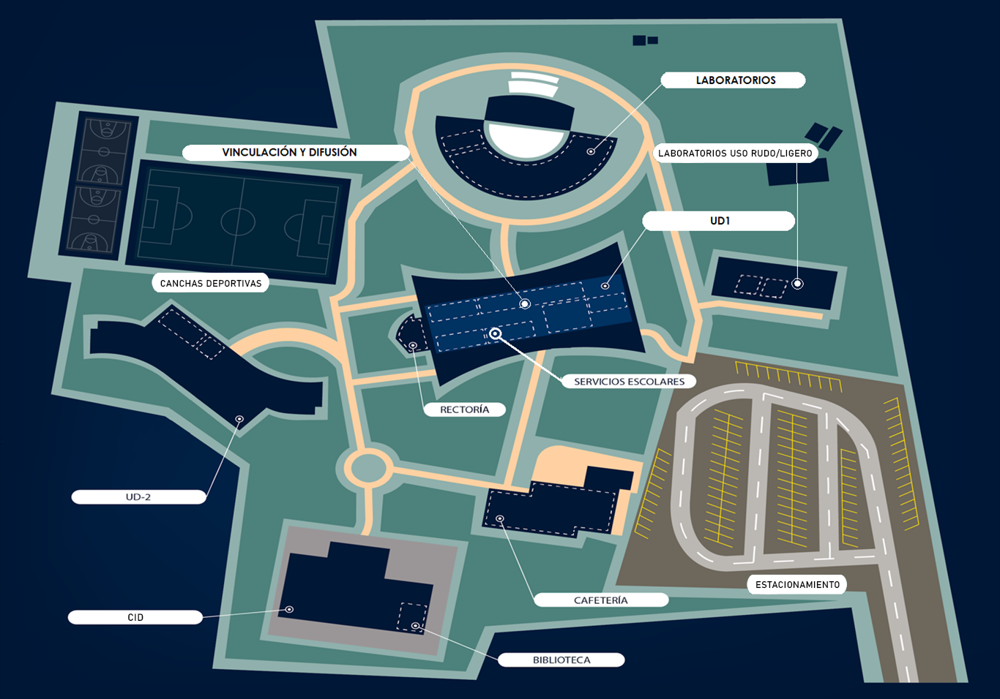

Un equipo de jóvenes innovadores de Pénjamo, Guanajuato, comprometidos con revolucionar la agricultura mediante tecnología de vanguardia.
Conocer al EquipoDe Pénjamo para el mundo
Somos un equipo de estudiantes apasionados por la tecnología y la agricultura, originarios del estado de Guanajuato. Nuestra formación en la Universidad Politécnica de Pénjamo (UPPE) nos ha dado las herramientas para enfrentar los desafíos del campo guanajuatense.
InsectraX nació como respuesta a la problemática que enfrentan los agricultores de nuestra región: la exposición a químicos peligrosos y la necesidad de optimizar recursos en el campo.
Nuestra misión es clara: desarrollar tecnología accesible que proteja la salud de los agricultores, incremente la productividad y promueva una agricultura más sostenible.

Las mentes detrás de InsectraX

Encargado de la dirección general del proyecto y del desarrollo técnico. Ángel destaca por su creatividad, liderazgo y habilidades en programación, diseño web y automatización. Su enfoque combina innovación y funcionalidad, impulsando al equipo hacia soluciones prácticas y efectivas.
Apoya en la coordinación del equipo y en la toma de decisiones clave del proyecto. Erandi se caracteriza por su compromiso, organización y capacidad para resolver problemas de forma eficiente. Su labor es fundamental para mantener la estructura y el buen desarrollo de las tareas del grupo.
Guía y orienta al equipo durante el desarrollo del proyecto, brindando apoyo técnico y académico. El profesor José de Jesús aporta su experiencia, conocimiento y liderazgo para asegurar que cada integrante cumpla sus objetivos y el proyecto mantenga una alta calidad.

Responsable de supervisar el cumplimiento de los objetivos y la calidad de cada fase del proyecto. Emmanuel destaca por su atención al detalle, compromiso y capacidad para detectar áreas de mejora, asegurando que el trabajo final cumpla con los estándares establecidos.
Encargado del diseño visual y la presentación gráfica del proyecto. Bryan aporta creatividad, estilo y un enfoque estético que da identidad al equipo. Su trabajo garantiza que cada parte del proyecto sea atractiva, coherente y visualmente impactante.
Participa en la creación de elementos visuales y en la mejora estética del proyecto. Miguel aporta ideas originales, equilibrio visual y creatividad, contribuyendo a que el diseño final sea atractivo, funcional y representativo de la identidad del equipo.
Principios que guían nuestro trabajo
Desarrollamos tecnología que respeta el medio ambiente y promueve prácticas agrícolas responsables.
Creemos en el poder de la tecnología para mejorar la calidad de vida de las comunidades rurales.
Buscamos constantemente nuevas soluciones para los desafíos del campo guanajuatense.
Cada componente de InsectraX está diseñado para ofrecer máxima eficiencia y exactitud.
Los principios que guían nuestra formación
La Universidad Politécnica de Pénjamo se fundamenta en una filosofía que integra la excelencia académica con el compromiso social, formando profesionales capaces de transformar su entorno.
Misión: Formar profesionales competitivos, creativos y con sentido humano, capaces de generar y aplicar conocimientos científicos y tecnológicos que contribuyan al desarrollo sustentable de la región y del país.
Visión: Ser una institución de educación superior reconocida por su calidad académica, su vinculación con los sectores productivos y su contribución al desarrollo sostenible de la sociedad.
Valores: Honestidad, responsabilidad, respeto, compromiso social, trabajo en equipo y mejora continua son los pilares que sustentan nuestra acción educativa.
 

Formación de calidad en Pénjamo
La UPPE ha sido fundamental en nuestro desarrollo como profesionales y emprendedores. Su enfoque en la educación práctica y la innovación nos ha permitido transformar ideas en soluciones reales.
Gracias al apoyo de nuestros mentores y las instalaciones de la universidad, hemos podido prototipar, probar y perfeccionar InsectraX hasta convertirlo en una solución viable para el campo.
Estamos orgullosos de representar a nuestra alma máter y demostrar que desde Pénjamo se puede generar tecnología de clase mundial.